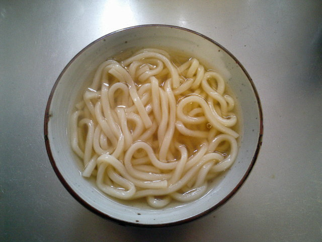
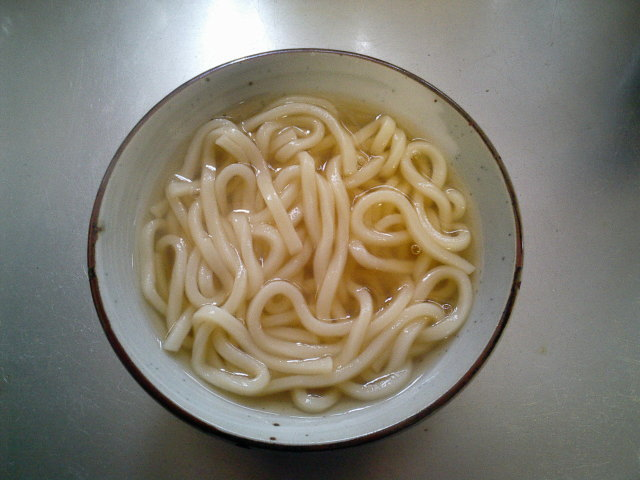

Udon
Udon je typ hrubých nudiel z pšeničnej múky v japonskej kuchyni. Najčastejšie býva podávaný v podobe horúcej nudlovej polievky, zvyčajne sa servíruje spolu so sójovou omáčkou, dashi (základ Miso rámena) a mirin (jemné saké) a na vrchu bývajú nakrájané kolieska červenej cibule. Na vrch sa taktiež môže dať v podobe topingu aj kreveta, tempura alebo aj kúsky tofu. Samozrejme že sa chute udona menia v jednotlivých regiónoch Japonska.

Pôvod
O pravdivom pôvode jedla Udon sa toho veľa nevie, avšak je tu veľa príbehov, z ktorých najznámejší hovorí že v roku 1241 dvaja mnísy ukázali, ako sa dá pomlieť múka v Japonsku. Z pomletej múky neskôr vznikli nudle podobné tým Udon, palacinky a iné ktoré sa neskôr rozšírili do celej krajiny.
Variácie Udon
Udon cestoviny sú najčastejšie servírované v 2 variáciách, ktorými sú horúci a studený Udon.
Horúci Udon
Horúci Udon sa najčastejšie podáva v chladné dni. Sever Japonska je od konca jesene po začiatok jari veľmi chladný a preto sa väčšina horúcich variácií nachádza na severe krajiny.
Kake Udon
Udon vo vývare s tenko nakrájanou zelenou cibuľou a plátkami kamaboko
Kitsune Udon (Líščí Udon)
Udon s polevou z nasladko smažených plátkov tofu
Wakame udon
Udon, na ktorom je zelená morská riasa

Stamina Udon
Udon, ku ktorému sú pridané zdravé ingrediencie ako mäso, vajíčko a zelenina
Predchádzajúci
Nasledujúci
Studený Udon
Studený udon , taktiež nazývaný aj Udon šalát je zvyčajne pomiešaný s vaíčkom, kúskami kuraťa a čerstvou zeleninou ako napríklad uhorka a reďkovka. Polevy sú vybrané na základe sezóny, väčšina sa však pridáva v surovom stave.
Zaru Udon
Studené cestoviny s roztrhanými kúskami nori, servírované na bambusovom podnose (Zaru)
Bukkake Udon
Udon s Dashi vývarom

Kijōyu udon
Studená polievka podávaná so surovou sójovou omáčkou a sudachi (tip ovocia) šťavou

Hadaka Udon
Inak aj nazývaný "holý" Udon, pozostáva len z Udonu
Predchádzajúci
Nasledujúci
Kake Udon
Udon vo vývare s tenko nakrájanou zelenou cibuľou a plátkami kamaboko
Kitsune Udon (Líščí Udon)
Udon s polevou z nasladko smažených plátkov tofu
Wakame udon
Udon, na ktorom je zelená morská riasa
Stamina Udon
Udon, ku ktorému sú pridané zdravé ingrediencie ako mäso, vajíčko a zelenina
Zaru Udon
Studené cestoviny s roztrhanými kúskami nori, servírované na bambusovom podnose (Zaru)
Bukkake Udon
Udon s Dashi vývarom
Kijōyu udon
Studená polievka podávaná so surovou sójovou omáčkou a sudachi (tip ovocia) šťavou

Hadaka Udon
Inak aj nazývaný "holý" Udon, pozostáva len z Udonu